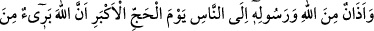
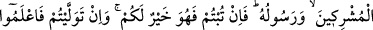
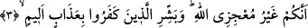

şehvet için artırmaya başlar. Şehvet ortaya çıkınca onun acı sonuçları yenen, içilen,
giyilen ve nikahlananları içine alır. Şehvet ateşi günbegün artar.
Sonuçta kalb ve ruhta hastalık meydana getirir. İşte peygamberler bu hastalığı ortadan
kaldırmak ve şifâya kavuşturmak için gönderilmiştir. Nitekim Efendimiz (a.s.) şöyle
buyurmuştur: “Ben, alışılagelen kötü âdetleri ve nefislerin luzumsuz isteklerini
ortadan kaldırmak için gönderildim.”[90]
“Yeryüzünde dört ay daha dolaşın” âyetinde nefislerin beşeriyet arzında dört vasfı
tamamlamak için seyâhat ettiklerine işâret vardır. Bu dört vasıf nebâtiyyet (bitkisel hal),
hayevâniyyet (hayvansal hal), şeytâniyyet ve insâniyyettir. Bu vasıflar ise yüce, rûhânî
ve bir cevher olan ruh ile süflî ve dört unsurdan (su, hava, toprak, ateş) oluşan bedenin
birleşmesinden meydana gelmiştir.
Nebâtiyyet suyu, hayevâniyyet havayı, şeytaniyyet ateşi; insaniyyet ise toprağı
meydana getirir. Bu vasıfların kemal bulması için nefisler bülûğ çağına kadar dünya
otlaklarına ve nimetlerine salıverilir.
Ey saadet ehlinin nefisleri “iyi bilin ki siz” dünyevi nimetleri elinizden çekip almak
ve uhrevî faydaları size bahşetmek hususunda “Allah’ı âciz bırakacak değilsiniz. Allah
kâfirleri rezil rüsvây edecektir.” Yâni, şakâvet ehlini gaflet ve şehvet çöllerinde helâk
eder. et-Te’vîlâtü’n-Necmiyye’de böyle geçmektedir.
3. Hacc-ı ekber (en büyük hac) gününde Allah ve Rasûlü’nden insanlara bir
bildiridir: Allah ve Rasûlü müşriklerden uzaktır. Eğer tevbe ederseniz, bu sizin için
daha hayırlıdır. Ve eğer yüz çevirirseniz bilin ki siz Allah’ı âciz bırakacak
değilsiniz. O kâfirlere elem verici bir azâbı müjdele.
“Hacc-ı ekber gününde Allah ve Rasûlü’nden insanlara” yani bütün müminlere ve
ahdine sâdık olan ve olmayan kâfirlere “bir bildiridir: Allah ve Rasûlü müşriklerden”
yani muâhede yapıp da onu bozan müşriklerin bozdukları ahidlerinden “uzaktır.”
kat’iyetle beridir.
“Hacc-ı ekber günü”nden maksadın ne olduğu konusunda iki görüş vardır:
1- “Hacc-ı ekber günü”nden maksad, bayram günüdür. Çünkü ziyaret tavafı ve diğer
haccın rukünleri ile kurban kesmek, şeytan taşlamak ve diğer haccın önemli işleri o gün
tamam olur. “İhtar/berâet” de o gün yapılmıştır.
Rivayet edildiğine göre Peygamber (s.a.) Efendimiz, Vedâ haccında kurban
bayramının birinci günü cemrelerde durmuş ve “İşte hacc-ı ekber günü bugündür.”